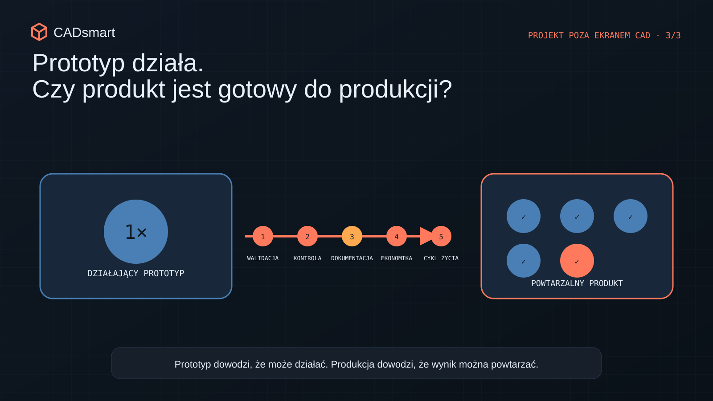
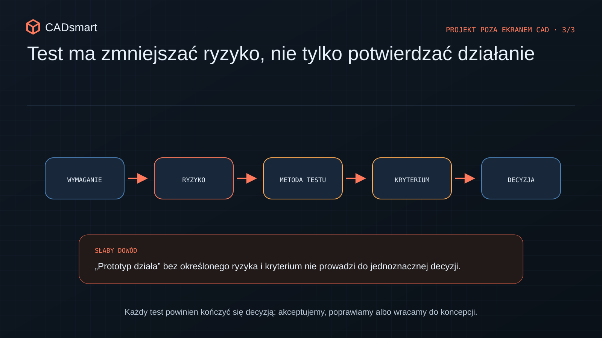
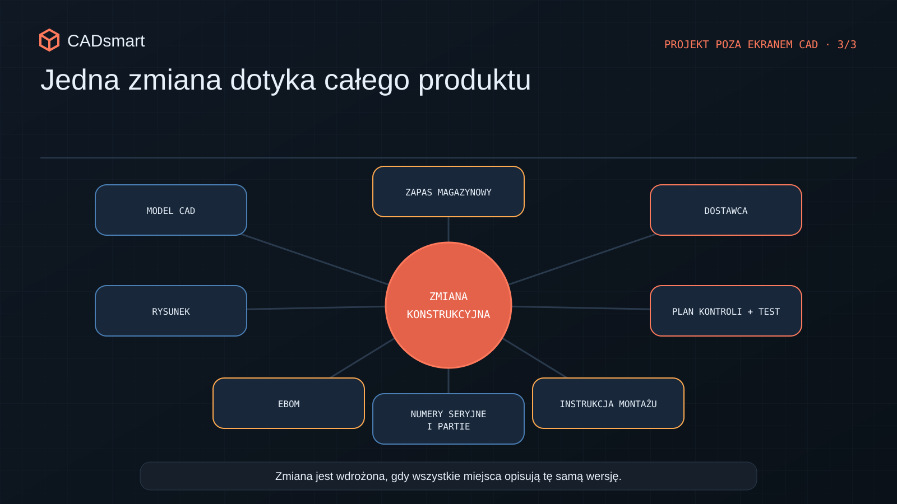
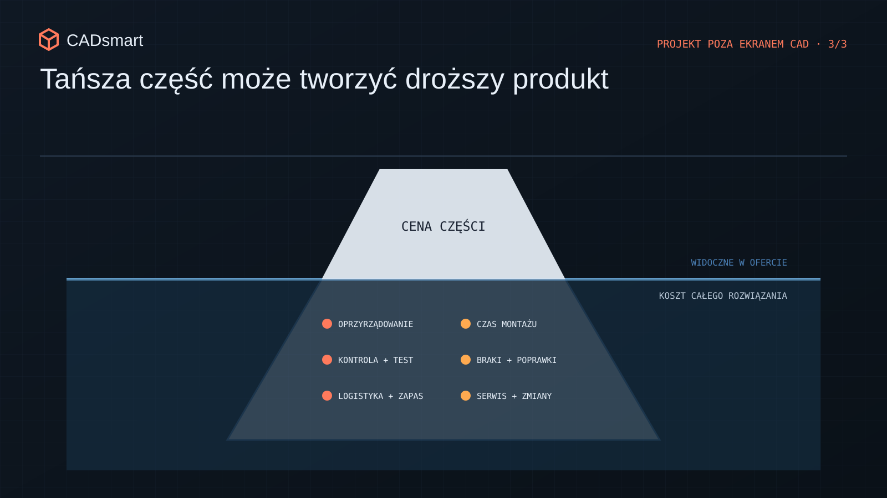
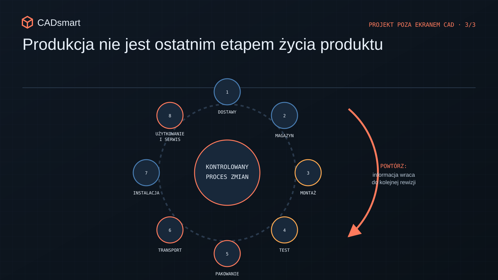

Prototyp działa. Co musi się wydarzyć przed uruchomieniem produkcji?
Jak przejść od działającego prototypu do powtarzalnego produktu: testy, dokumentacja, zmiany, koszt, montaż i cykl życia.
Działający prototyp to dopiero początek
Prototyp działa. Mechanizm się rusza, konstrukcja przenosi obciążenie, urządzenie robi to, co miało robić. Wreszcie można pokazać coś więcej niż render i slajd z harmonogramem. Świetny moment. Naprawdę jest co świętować. Tylko nie otwierajmy jeszcze szampana z napisem „produkcja seryjna”.
Działający prototyp potwierdza, że główna koncepcja ma sens. Nie potwierdza automatycznie, że produkt da się wykonywać kolejny raz, w tej samej jakości, za zakładane pieniądze i bez konstruktora stojącego obok stanowiska. Egzemplarz złożony przez R&D często korzysta z wiedzy, której nie ma na żadnym rysunku. Tu trzeba coś lekko podpiłować, tam przewód ułożyć „w ten konkretny sposób”, a tę śrubę dokręcić z wyczuciem. Zespół zna wszystkie wcześniejsze iteracje, więc nawet nie zauważa, ile informacji nosi wyłącznie we własnych głowach. Produkcja takiego kontekstu nie powinna potrzebować.

Przejście od „działa” do „możemy to powtarzalnie wytwarzać” wymaga domknięcia pięciu obszarów: walidacji, kryteriów kontroli, dokumentacji i zmian, kosztu całego procesu oraz życia produktu już po opuszczeniu hali.
1. Nie testuj w kółko tego, co już wiesz
Pierwszy prototyp zwykle odpowiada na podstawowe pytanie: czy ta koncepcja w ogóle działa? Kolejne testy powinny celować w ryzyka. Inaczej można dziesięć razy potwierdzić to samo i ani razu nie sprawdzić warunku, który później położy produkt.

Plan walidacji dobrze zacząć od listy kluczowych wymagań i ryzyk. Dla każdego z nich trzeba ustalić:
- co dokładnie chcemy potwierdzić;
- jaki egzemplarz, konfiguracja i warunki są reprezentatywne;
- co mierzymy i z jaką dokładnością;
- ile powtórzeń potrzebujemy do podjęcia decyzji;
- jaki wynik oznacza sukces;
- co robimy, jeśli wynik będzie graniczny albo negatywny.
Nie każdy test musi wyglądać jak program kosmiczny. Czasem wystarczy proste oprzyrządowanie, które pozwala powtarzalnie przyłożyć obciążenie i zebrać wynik. W innym przypadku trzeba porównać kilka czynników, na przykład poprzez planowanie eksperymentu, czyli DOE. Skala testu powinna wynikać z decyzji, którą chcemy podjąć, a nie z potrzeby zapełnienia raportu wykresami.
Przy produktach elektromechanicznych przygotowywałem protokoły i raporty testowe, kryteria akceptacji oraz stanowiska wspierające testy produkcyjne. Wspólny mianownik zawsze był ten sam: wymaganie trzeba przełożyć na powtarzalną metodę. Bez tego nawet sto prób może dać dużo liczb i bardzo mało odpowiedzi.
2. Kontrola musi działać bez konstruktora za plecami
Podczas prototypowania wiele rzeczy odbywa się „na wyczucie”. Konstruktor wie, jak ułożyć przewód, jak mocno dokręcić połączenie i który dźwięk jest normalny. Przy jednym egzemplarzu da się z tym żyć. Przy produkcji zaczyna się loteria. Wiedza z głowy musi zostać zamieniona w sposób pracy, który można przekazać, powtórzyć i skontrolować.
Kryterium „zgodne z modelem” niewiele tu daje. Trzeba wskazać cechy krytyczne, metodę pomiaru i granice decyzji. Do tego sprawdzić, czy wybrany wymiar w ogóle da się wiarygodnie zmierzyć na produkcji. Wymaganie, którego nie potrafimy skontrolować, jest trochę jak regulamin napisany niewidzialnym atramentem. Dobry plan kontroli obejmuje trzy poziomy:
- Część: czy kluczowe cechy wykonano zgodnie z dokumentacją?
- Montaż: czy sposób połączenia i regulacji daje właściwy wynik?
- Produkt: czy gotowy egzemplarz spełnia funkcję i wymagania bezpieczeństwa?
Jeśli sprawdzamy produkt dopiero na samym końcu, wadę możemy znaleźć wtedy, gdy koszt części i całego montażu został już poniesiony. Jeśli z kolei mierzymy wszystko, co da się zmierzyć, kontrola robi się droga i powolna. Chodzi o sprawdzanie właściwych cech w takim miejscu procesu, w którym nadal możemy sensownie zareagować.
Najprostsza zasada? Osoba, która nie uczestniczyła w rozwoju produktu, powinna na podstawie dokumentacji umieć powiedzieć: dobre, złe albo wymaga decyzji. Bez telefonu do konstruktora i pytania: „A co autor miał na myśli?”.
3. Folder „FINAL_final_ostateczny2” nie jest kontrolą konfiguracji
Prototyp potrafi powstać z mieszanki modeli, rysunków, notatek, wiadomości i ręcznych poprawek. Przy małym zespole wszyscy mniej więcej wiedzą, co zostało zmienione. „Mniej więcej” kończy się jednak szybko, gdy rośnie liczba części, dostawców, stanowisk i egzemplarzy.

Gotowość produkcyjna wymaga jednego spójnego pakietu informacji. Zależnie od produktu będą to między innymi:
- zatwierdzone modele i rysunki z rewizjami;
- EBOM, czyli inżynierska lista materiałowa;
- specyfikacje komponentów handlowych;
- instrukcje montażu i momenty dokręcania;
- procedury kontroli oraz testów;
- wymagania dotyczące oznaczeń, pakowania i transportu;
- zapis odstępstw i zmian.
Same pliki nie oznaczają jeszcze, że konfiguracja jest pod kontrolą. Trzeba wiedzieć, która rewizja obowiązuje, kto ją zatwierdził, od którego egzemplarza ma być używana i co jeszcze zmienia się razem z nią. W środowisku PLM służą do tego między innymi procesy ECR i ECO, czyli zgłoszenie oraz zatwierdzenie zmiany inżynierskiej. Ich sens nie polega na produkowaniu formularzy. Chodzi o przeprowadzenie zmiany przez cały produkt, bo jedna decyzja może jednocześnie dotknąć modelu, rysunku, BOM-u, zapasu magazynowego, instrukcji montażu i testu.
Pracując z Arena PLM, EBOM oraz procesami zmian, widziałem, że samo narzędzie nie rozwiązuje problemu. Najpierw trzeba ustalić odpowiedzialność: kto zgłasza zmianę, kto ocenia jej wpływ, kto zatwierdza i jak produkcja dowiaduje się, od kiedy ma budować nową wersję. PLM pomaga pilnować porządku. Nie zastąpi decyzji, której nikt nie podjął.
4. Tania część potrafi zrobić drogi produkt
Kiedy prototyp zaczyna działać, szybko pojawia się temat obniżenia kosztu. Najłatwiej porównać dwie ceny części i wybrać niższą. Tyle że cena komponentu to tylko kawałek całego rachunku. Tańszy element może wymagać dodatkowego uchwytu, dłuższego montażu, osobnej kontroli albo częstszych poprawek. Droższy może usunąć dwie śruby, uprościć bazowanie i skrócić test. Dlatego pytanie nie brzmi: „która część jest tańsza?”, lecz „które rozwiązanie daje niższy koszt całego produktu?”.

Warto policzyć między innymi:
- liczbę operacji i zmian narzędzia podczas montażu;
- czynności podatne na pomyłkę;
- koszt specjalnego oprzyrządowania;
- czas kontroli i testu;
- liczbę wariantów utrzymywanych w magazynie;
- zdolność dostawcy do utrzymania wymaganych tolerancji;
- zachowanie kosztu przy docelowym wolumenie.
Tu właśnie DFMA, projektowanie z myślą o wytwarzaniu i montażu, staje się narzędziem biznesowym. Usunięcie części, uproszczenie bazowania, lepszy dostęp albo ograniczenie możliwości błędnego montażu potrafią jednocześnie skrócić czas, poprawić jakość i obniżyć ryzyko.
Przy wdrażaniu produktów do produkcji masowej i budowaniu procedur dla R&D oraz produkcji najważniejsze było przejście od jednego działającego egzemplarza do procesu, który daje ten sam wynik wielokrotnie. Tego nie załatwia jednorazowa runda „cost down”. Potrzebna jest współpraca konstrukcji, zakupów, jakości, dostawców i montażu. Cena części jest łatwa do wpisania w tabelę. Koszt chaosu trochę gorzej, ale to nie znaczy, że go nie ma.
5. Produkt nie przestaje istnieć po zejściu z linii
Gotowy wyrób trzeba zapakować, przetransportować, zainstalować, użytkować, serwisować i kiedyś wycofać. Każdy z tych etapów może ujawnić założenie, którego prototyp laboratoryjny nigdy nie sprawdził. Pakowanie jest świetnym przykładem. Produkt może działać bez zarzutu, a potem nie przetrwać transportu albo wymagać bardzo drogiej skrzyni, bo nikt nie przewidział punktów podparcia, sposobu podnoszenia czy podatnych na uszkodzenie elementów.
W projekcie dla klienta w USA pakowanie było częścią zakresu obok konstrukcji, kosztu i koordynacji wykonania. Nie było dodatkiem dopisanym na końcu. Było warunkiem dostarczenia rozwiązania w jednym kawałku, co, umówmy się, jest dość istotną funkcją produktu.

Podobnie z serwisem. Dostęp do części zużywalnej, możliwość diagnozy, czas demontażu i identyfikacja rewizji mają bezpośredni wpływ na koszt po sprzedaży. Jeśli pomyślimy o nich dopiero po zamrożeniu projektu, mała poprawa serwisowa może oznaczać zmianę obudowy, okablowania albo całej architektury podzespołu.
Przed uruchomieniem produkcji warto więc przeprowadzić produkt przez pełny scenariusz:
- odbiór komponentów;
- magazynowanie i identyfikację;
- montaż oraz test;
- pakowanie i transport;
- instalację u klienta;
- użytkowanie, serwis i obsługę zmian;
- wycofanie lub wymianę.
Jeżeli któryś etap wymaga improwizacji, to właśnie znaleźliśmy kolejne ryzyko projektowe.
Kiedy prototyp naprawdę staje się produktem?
Nie ma uroczystego przycisku, który zamienia prototyp w produkt. Gotowość pojawia się wtedy, gdy testy, dokumentacja i proces zaczynają tworzyć jeden spójny system.
Przed skalowaniem warto potwierdzić, że:
- kluczowe wymagania mają wyniki testów i jasne kryteria;
- cechy krytyczne można powtarzalnie wykonać i skontrolować;
- dokumentacja opisuje jedną zatwierdzoną konfigurację;
- zmiany mają właścicieli oraz kontrolowany sposób wdrożenia;
- koszt policzono dla produktu, montażu, jakości i serwisu;
- pakowanie, transport, instalacja i cykl życia nie opierają się na improwizacji.
Działający prototyp jest ważnym dowodem. Produkt gotowy do produkcji wymaga jednak czegoś więcej: sposobu osiągania tego samego wyniku wiele razy, przez różne osoby i różnych dostawców, również wtedy, gdy zespół R&D nie stoi obok.
Jeżeli przygotowujesz produkt do NPI, uruchomienia produkcji albo przekazania dokumentacji dostawcom, mogę pomóc w przeglądzie gotowości produkcyjnej, DFMA, strukturze EBOM, planie testów i uporządkowaniu procesu zmian.
Sprawdź gotowość do produkcji
Chcesz ocenić, czy działający prototyp można już powtarzalnie wytwarzać i kontrolować?
Rozwiń 9 pytań kontrolnych
- Czy największe ryzyka potwierdzono na reprezentatywnej liczbie egzemplarzy, w warunkach granicznych i z uwzględnieniem zmienności części, montażu oraz użytkowania?
- Czy każdy test jest powiązany z wymaganiem, mierzalnym kryterium akceptacji i ustaloną decyzją po wyniku pozytywnym, negatywnym lub granicznym?
- Czy osoba spoza zespołu R&D potrafi na podstawie dokumentacji wykonać kontrolę, używając wskazanego narzędzia, bazowania, warunków pomiaru i granic wyniku?
- Czy proces postępowania z niezgodnością określa sposób oznaczenia wyrobu, właściciela decyzji oraz zasady odstępstwa, poprawki i ponownej kontroli?
- Czy można odtworzyć konfigurację dowolnego egzemplarza i wskazać obowiązujące dla niego rewizje modeli, rysunków, EBOM, instrukcji oraz testów?
- Czy każda zmiana ma zatwierdzenie, określony moment wdrożenia i zakres obowiązywania oraz analizę wpływu na dokumentację, zapas, dostawców, produkcję i już zbudowane egzemplarze?
- Czy koszt docelowy obejmuje wolumen, robociznę, oprzyrządowanie, kontrolę, braki, logistykę i serwis, zamiast przenosić oszczędność z części na inny etap?
- Czy można usunąć część, operację, regulację albo możliwość błędnego montażu bez pogorszenia funkcji i obsługiwalności produktu?
- Czy pakowanie, transport, instalację i serwis sprawdzono w rzeczywistych warunkach, a informacje z produkcji i eksploatacji wracają do kontrolowanego procesu zmian?
Chcesz zachować pytania na później?